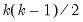

As with the single series dialog, the dialog has multiple pages that specify various settings for the graph view. We again focus exclusively on the page. The other pages, which control various display characteristics of the graph, are described below (
“Basic Customization”).
To select a graph type simply click on its name in the type listbox. The options that you will see on this page will depend on the selected graph type. Some of the options (, have already been considered (see
“Details”), so we focus here on the remaining settings. To aid in our discussion we divide entries in the listbox into three classes:
When you select any of the individual series graph types in a group with more than one series, the right-hand side of the dialog changes to reflect your choice. In addition to the , , and settings considered previously there will be a dropdown menu, labeled which controls whether to display: the individual series in a single frame (), the stacked individual series in a single frame (), or the series in individual frames ().
Setting the dropdown to instructs EViews to display each of the series in its own graph, with the individual graphs arranged in a larger graph as shown here for an area graph. We have not selected the setting so there are gaps due to missing values.
Note that in contrast to the setting where each series is plotted on the same scale, each graph is given a different vertical axis scale. This display emphasizes the individual variation in the series, but makes it more difficult to compare across series. Later, we will show how we may control the vertical axes scales (
“Axes & Scaling”).
The final dropdown setting, , allows you to plot data that are sums of the series in the group. This method is available for most, but not all, individual graph types. The first graph element will be the first series plotted in the usual way; the second element will be the sum, for every observation, of the first series and the second. The third element will contain the sum of the first three series, and so forth.
Earlier we saw that the dropdown allows you to display summary statistic graphs (, ,
etc.) for your data (
“Graph Data”). For graphs of a single series, displaying summary data may be of limited value since the graph will show a single summary value. For multiple series, the dropdown allows us to display graphs that compare values of the statistics for each of the series in the group.
Once again using the newspaper advertising revenue series in group GROUP01, we set the dropdown to and display a bar graph with the multiple series displayed in a single frame. We see that the means of both RETAIL and CLASSIFIED advertising revenue are significantly greater than the average NATIONAL revenue.
The other series in the group are link series. (See “Series Links” for a discussion of links). AAA, which is linked from the workfile page, contains data on Moody's Seasoned Aaa Corporate Bond Yield. GDPCHG, which is linked from the workfile page, measures the (annualized) quarterly percent change in GDP (in chained 2000 dollars). Both links convert the low frequency data to high using the constant-match average frequency conversion method.
We first display a line graph of the series in the group using the setting. Since TB03MTH is sampled at the workfile frequency, this graph is a mixed frequency graph, with TB03MTH plotted at a daily-5 frequency, AAA plotted at a monthly frequency, and GDPCHG plotted at a quarterly frequency. To make it easier to see the different frequencies in the plot, we display AAA and GDPCHG using lines and symbols (
“Lines and Symbols”), and we add vertical grid lines (
“Frame”) to the graph.
We may compare this graph to the same plot using the setting. Here, all three series are plotted at the daily-5 frequency, with the AAA and GDPCHG series using the frequency converted values. Note that the graph simply uses the values that are displayed when you examine the link series in the spreadsheet view.
Like , this setting plots the first series against the remaining series, but instead places each pair in an individual graph frame.
Like , this setting forms pairs by using successive pairs of series in the group, but places each pair in an individual graph frame.
The setting forms pairs using all possible pairwise combinations for series in the group and constructs a plot using the pair. If there are

series in the group, there will be a total of

plots, each in its own frame.
This setting constructs the same plots as , but displays only the lower triangle elements consisting of the unique pairs of series not including the series against itself. There are a total of  distinct pairwise graphs, each displayed in its own frame.
When you select or from the type listbox, the right-hand side of the page changes to offer a option, where you may add various types of fit lines to the graph as outlined in
“Auxiliary Graph Types”. You may also use the button to add additional auxiliary graphs. To illustrate, we use the familiar “Old Faithful Geyser” eruption time data considered by Simonoff (1996) and others (“Geyser.WF1”), and add both a regression line and a nearest neighbor fit relating eruption time intervals to previous eruption durations.
First, we open the group GROUP01 and select as our type, then select in the dropdown to add a linear regression line. Next, click on the button to display the page.
Click on the button to add an additional fit line to the existing graph. EViews displays a new dialog prompting you to select from the list of fit lines types that you may add to the scatterplot with regression line. We will select to be added to the existing graph. Click on to accept your choice.
You may elect to add additional elements by clicking on the button, or to remove an element by selecting it in the listbox and clicking on the button.
Returning to the main graph page, we see that the dropdown now reads (not depicted) indicating that we are using multiple graph types.
Click on to accept the graph settings, and EViews displays the scatterplot with both the linear regression fit and the default LOWESS nearest neighbor fit superimposed on the observations. Note that since there are two lines in the graph, EViews provides legend information identifying each of the lines. We see the nearest neighbor fit has a slightly higher slope for lower values of INTERVAL and a lower slope at higher values of INTERVAL than the corresponding linear regression.